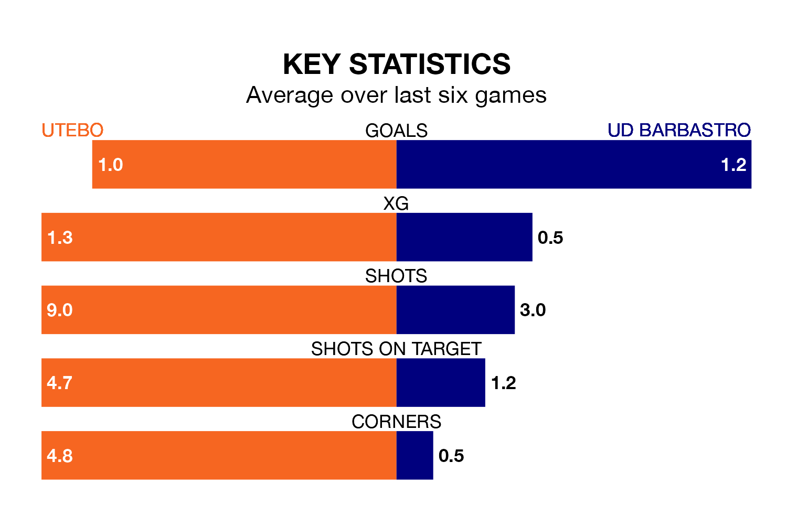

UD Barbastro face Utebo on Sunday seeking to protect their formidable unbeaten run in Segunda División RFEF Group 2.
Barbastro are unbeaten in eight, with five wins and three draws, ahead of the 11am kick-off.
They face an Utebo team who have won three and drawn four over the same number of games.
With 17 goals in 20 games so far this season, Barbastro are scoring at below the league average rate with 0.8 goals per game. But they are conceding fewer than average too, letting in 18 goals at a rate of 0.9 per game.
Utebo, meanwhile, are above average scorers, with 1.3 goals per game, compared to a league average of 1.1. They have conceded 1.0 goal per game.
In the last 10 years, Utebo and Barbastro have played each other on eight occasions. They won one each, and they drew six times.
On average, Utebo scored 0.9 goals and Barbastro 1.0 in those matches.
Their last meeting was on September 24, when they played out a 1-1 draw.
The hosts are fifth in the table after 20 games, of which they have won 10 and drawn seven, earning 37 points.
The away side are three places behind Utebo in eighth, with seven wins and eight draws putting them on 29 points.
Utebo's last match was on Sunday, a 1-1 draw against Barakaldo CF.
Barbastro drew 0-0 with Athletic Club B last time out, also on Sunday.
Updated: 14:12 (UTC), 02/02/24